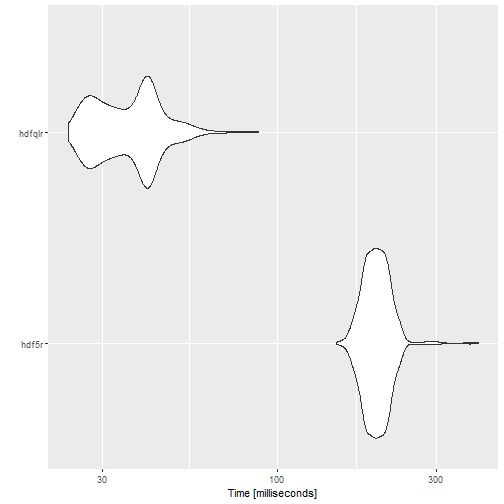
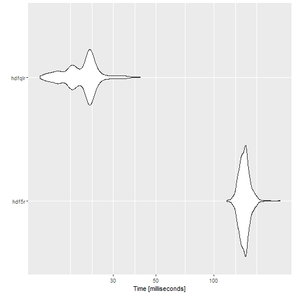

Benchmarking hdfqlr
Michael Koohafkan
2021-06-09
benchmark.rmdThis document provides some benchmarks for comparing the performance
of hdfqlr to the hdf5r
package. This vignette previously included comparisons to the
now-deprecated h5
package. Other packages that provide read (but not write) support for
HDF files were not tested.
Writing HDF datasets
write_hdfqlr = function() {
test.file = tempfile(fileext = ".h5")
hql_create_file(test.file)
hql_use_file(test.file)
for (i in paste0("vector", 1:6)) {
write("DATASET", runif(10000), i)
}
hql_close_file(test.file)
}
write_hdf5r = function() {
test.file = tempfile(fileext = ".h5")
# create hdf5 file (6 vectors with 10k random numbers each)
h5file = hdf5r::H5File$new(test.file, "w")
for (i in paste0("vector", 1:6)) {
h5file[[i]] = runif(10000)
}
h5file$close_all()
}
write.benchmark = microbenchmark(
"hdf5r" = write_hdf5r(),
"hdfqlr" = write_hdfqlr(),
times = 1000L,
unit = 'ms'
)| expr | min | lq | mean | median | uq | max | neval |
|---|---|---|---|---|---|---|---|
| hdf5r | 150.1851 | 185.27945 | 199.61208 | 198.1042 | 211.18990 | 399.0265 | 1000 |
| hdfqlr | 23.8104 | 29.05005 | 36.77295 | 37.1426 | 41.68425 | 88.0541 | 1000 |

plot of chunk write-benchmark
Reading HDF datasets
tf = tempfile(fileext = ".h5")
hql_create_file(tf)
hql_use_file(tf)
sets = paste0("vector", 1:6)
for (i in sets) {
hql_write_dataset(runif(10000), i)
}
hql_close_file(tf)
read_hdfqlr = function(file, sets) {
hql_use_file(file)
result = lapply(sets, hql_read_dataset)
hql_close_file(file)
result
}
read_hdf5r = function(file, sets) {
h5file = hdf5r::H5File$new(file, "r")
result = lapply(sets, function(i) h5file[[i]][])
h5file$close_all()
result
}
read.benchmark = microbenchmark(
"hdf5r" = read_hdf5r(tf, sets),
"hdfqlr" = read_hdfqlr(tf, sets),
times = 1000L,
unit = 'ms'
)| expr | min | lq | mean | median | uq | max | neval |
|---|---|---|---|---|---|---|---|
| hdf5r | 116.4230 | 137.74210 | 143.90668 | 143.6394 | 148.6843 | 219.4179 | 1000 |
| hdfqlr | 12.5036 | 18.11385 | 21.01237 | 21.9278 | 23.0107 | 41.2884 | 1000 |

plot of chunk read-benchmark